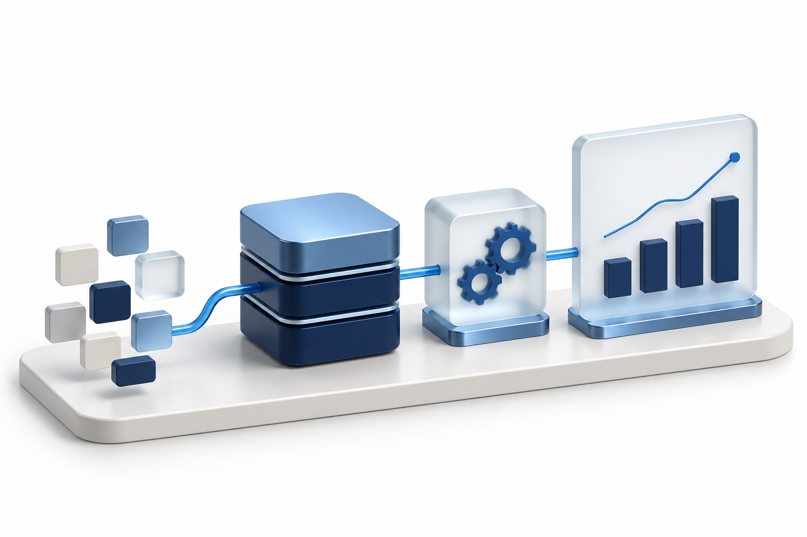
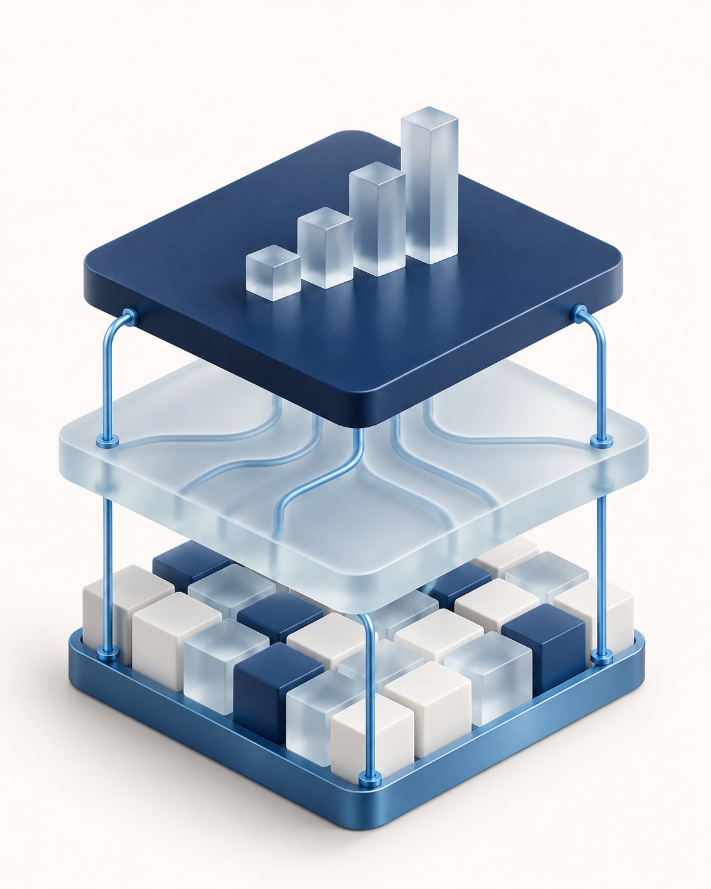
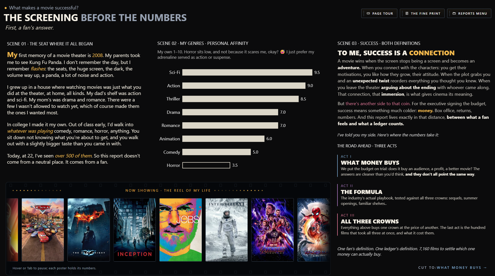
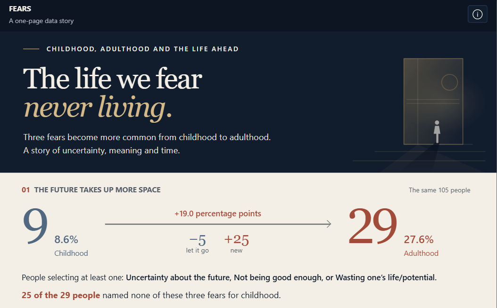
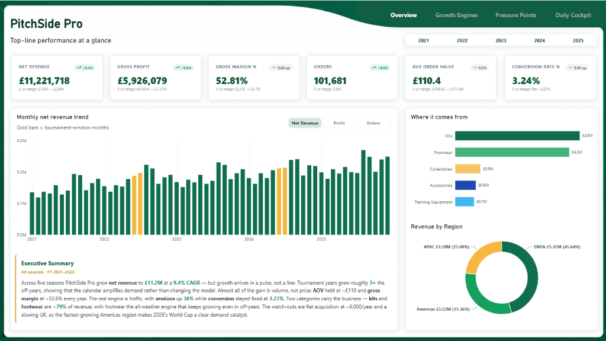
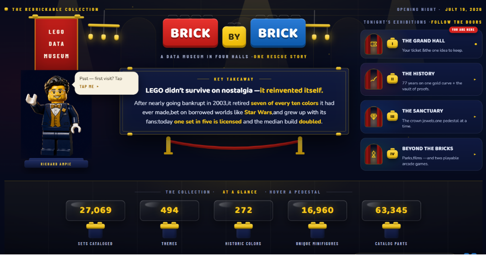
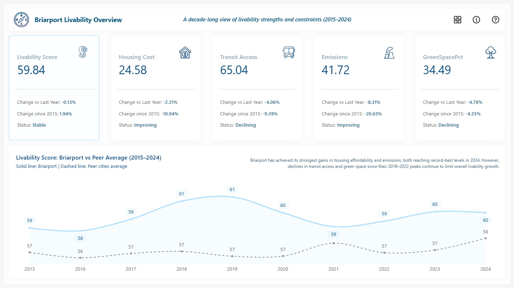
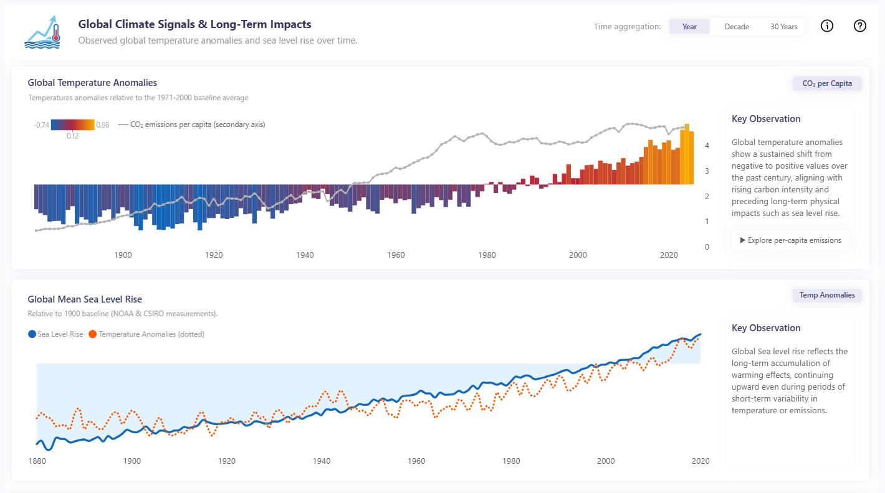
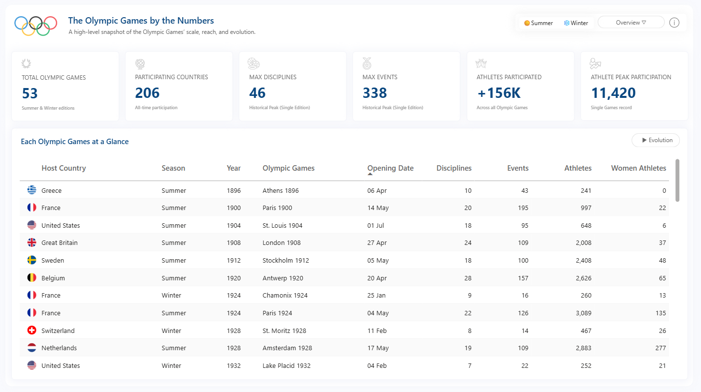
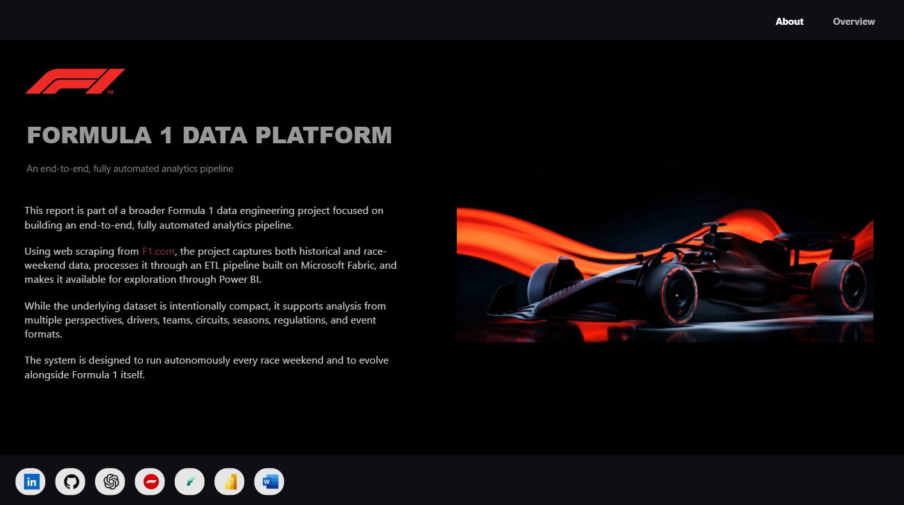

reports migrated hands-on
Plus ~150 additional migrations led.
FINANCE, DATA & BUSINESS INTELLIGENCE
With five years of experience across finance, data engineering and business intelligence, I help businesses connect their data to the decisions that matter. As a BI and Data Development leader, I bring financial perspective and technical direction to build reliable data platforms, meaningful analytics and automation that frees teams to focus on the business.
Richard Ampié · Finance, engineering & BI leadership
FROM DATA TO OPERATIONS

01 / EXPERIENCE THAT DELIVERS RESULTS
Experience across finance, data engineering and BI leadership. Selected outcomes from my professional career.
Plus ~150 additional migrations led.
From 3 hours to 1 hour.
Workload and query optimization.
Version control and governed deployment.
Career outcomes documented in my CV. These refer to specific projects; each engagement starts with its own assessment.
02 / HOW I CAN HELP
Focused engagements with a defined scope, clear deliverables and knowledge transfer to your team.
When reports are slow, loads fail or capacity costs too much.
Power BI · DAX · SQL · Microsoft Fabric
When your team repeats tasks that should already be handled.
Python · Power Automate · Codex · Claude Code
When your platform needs to evolve while retaining business logic.
Tableau → Power BI · PBIP / PBIR · Azure DevOps
When decisions depend on scattered data or inconsistent metrics.
Fabric · SQL Server · PySpark · Power BI
03 / ENGINEERING & AUTOMATION
Real projects, practical automation and data foundations built to support the business. Open a case to explore the approach.

Connected sources, reliable models and a delivery process you can maintain.
Explore the Formula 1 buildVersioned, controlled releases.
Slow releases and difficulty controlling versions and changes across environments.
PBIP integration with Git in Azure DevOps, separate Dev/Test/Prod workspaces and governed deployments with rollback capability.
Release cycle reduced from 72 hours to approximately 30 hours, with traceability of changes.
A more reliable data platform.
Unstable loads, lengthy processing and reporting scattered across tools.
A lakehouse/warehouse platform with incremental loading, partitioning and validation, alongside modernized models and reports.
Data ingestion reduced from 3 hours to 1 hour. Across my career: 80+ reports migrated hands-on and ~150 additional migrations led.
Up-to-date metrics and less manual work.
Manual reconciliation and information distribution delaying analysis and financial close.
Business source connections to SQL Server and Power BI, standardized metrics and automated report refresh and delivery.
In the related professional experience, month-end close decreased from 5 days to 2.5 days.
Workloads and queries that use less.
Redundant consumption, concurrent loads and capacity bottlenecks.
Consumption analysis, incremental loads, partitioning, scheduling and query tuning, with pre- and post-load checks.
Approximately 50% lower compute / capacity usage in projects from my career.
A repeatable semantic review.
Manual review of large models makes it harder to find dependencies and consumption patterns.
Organized scripts and auditing practices to analyze DAX measures, dependencies and optimization opportunities.
A reusable semantic diagnostics process for consistently reviewing Power BI models.
Automated ingestion with failure tracking.
External-source data requiring extraction, consistent formatting and failure tracking.
Extraction with Requests, transformation with Pandas and relational database loading, including process failure logs.
A lab for source integration and ingestion automation.
From race data to analysis.
Integrating race, qualifying and practice data into a reusable BI structure.
Python/PySpark extraction and transformation in a Bronze/Silver/Gold architecture, with lakehouses and a master loading pipeline.
A public Microsoft Fabric data engineering and BI project. The repository includes ETL layers and orchestration artifacts.
Categories from bank transaction descriptions.
Repetitive classification of bank transactions from accounting text.
A classification model based on descriptions and references, with a Streamlit interface and Apache Airflow orchestration.
A lab connecting finance, machine learning and workflow automation.
04 / HOW I WORK
I turn technical knowledge, business rules and design standards into an agent-assisted development workflow. I retain ownership of architecture, business logic and delivery review.
Before
Daysof manual report development
In my current workflow
~½ dayto execute and publish reports with defined requirements
Personal experience with reports supported by a defined BRD and business rules. Timing depends on scope, data readiness and required validation.
Objective, BRD, business rules and acceptance criteria.
Data, semantic model and reusable development guides.
AI agents execute tasks under technical direction.
Review of logic, visuals, publication and documentation.
05 / SELECTED WORK
Public reports built to explore, explain and push Power BI further. The same attention to detail I bring to a business solution.

WORLD CHAMPS BCN 2026 · ROUND 3
A three-act story about what money buys in film: audience, return and ratings.
View on Microsoft Community ↗
HALLOWEEN CONTEST · DATA STORY
A one-page story about uncertainty, potential and the fears that change as we grow.
View on Microsoft Community ↗
WORLD CHAMPS BCN 2026 · ROUND 1
Revenue, margin, categories and regions in an experience exploring business performance.
View on Microsoft Community ↗
WORLD CHAMPS BCN 2026 · ROUND 2
An experience exploring the history of sets, collections and releases.
View on Microsoft Community ↗
WORLD CHAMPS ATL 2026 · ROUND 1
Housing, transit and sustainability with card-driven navigation. Recognized among Microsoft’s Judges’ Favorites.
View on Microsoft Community ↗
WORLD CHAMPS ATL 2026 · ROUND 2
Exploration of temperature anomalies, emissions and sea-level changes over time.
View on Microsoft Community ↗
WORLD CHAMPS ATL 2026 · ROUND 3
A view of the scale, participation and historical evolution of the Olympic Games.
View on Microsoft Community ↗
LAB · SPORTS ANALYTICS
An independent Formula 1 analytics project exploring race results.
Power BI is also a personal pursuit: I enter competitions, experiment and build because I enjoy getting better at it.
06 / THE CONSULTANT BEHIND THE WORK
BI leadership. Engineering mindset. Financial perspective.
My career brings together five years of experience in accounting and finance, data engineering and business intelligence. That combination helps me understand the business behind the numbers, frame the right questions and translate financial and operational needs into clear technical priorities.
Today I lead business intelligence and data development, connecting business priorities with architecture, team execution and delivery. My experience includes leading Tableau-to-Power BI migrations across companies, building Microsoft Fabric platforms and establishing development, automation and delivery processes that teams can maintain.
You work directly with me: we understand the problem, define what is worth solving and carry the solution through implementation, with documentation and knowledge transfer.
Nicaragua · Remote collaboration · Español / English
CURRENTLY
Migrations, semantic models, Fabric and delivery governance.
KPIs, reconciliations, financial close and operational automation.
07 / TRAINING & CREDENTIALS
4 certifications earned · 2 in progress
 Earned
Earned
DP-700
Microsoft Certified
View credential ↗ Earned
Earned
DP-600
Microsoft Certified
View credential ↗ Earned
Earned
PL-300
Microsoft Certified
View credential ↗ Earned
Earned
AI-900
Microsoft Certified
View credential ↗DP-800
Microsoft
View exam details ↗DP-300
Microsoft
View exam details ↗DP-800 and DP-300 are part of my development plan; they are not yet earned certifications.
08 / NEXT STEP
Tell me which process consumes time, which report has slowed down or what you want to automate. We can start by defining the problem and the scope of a first engagement.
rampiechamorro14@gmail.comGet in touch to define the scope of your project.